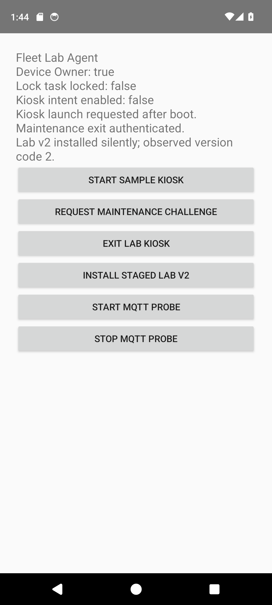
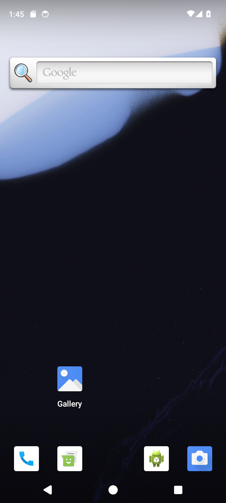
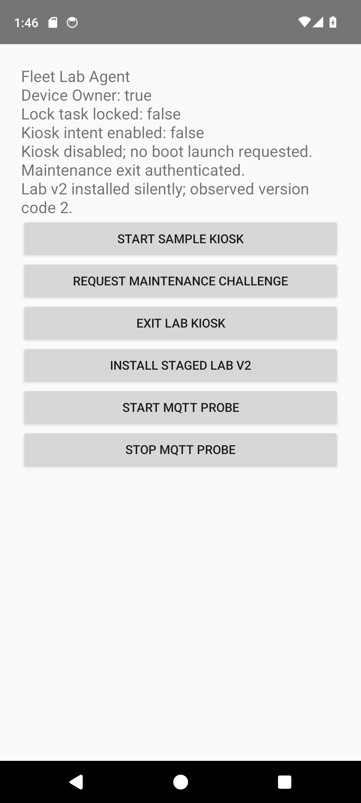

Fleet Android test replay
2026-10-16T10:43:01.614547+00:00 | emulator-5554 | passed
New recorded rerun of the lab checks. Assertions and command transcript
before-enabled-reboot.mp4
after-enabled-reboot.mp4
after-disabled-reboot.mp4
 kiosk-enabled-before-reboot | activity | policy | UI
kiosk-enabled-before-reboot | activity | policy | UI kiosk-restored-automatically | activity | policy | UI
kiosk-restored-automatically | activity | policy | UI restored-kiosk-contains-home | activity | policy | UI
restored-kiosk-contains-home | activity | policy | UI
kiosk-disabled-before-second-reboot | activity | policy | UI
disabled-kiosk-not-restored | activity | policy | UI
persisted-exit-confirmed | activity | policy | UI